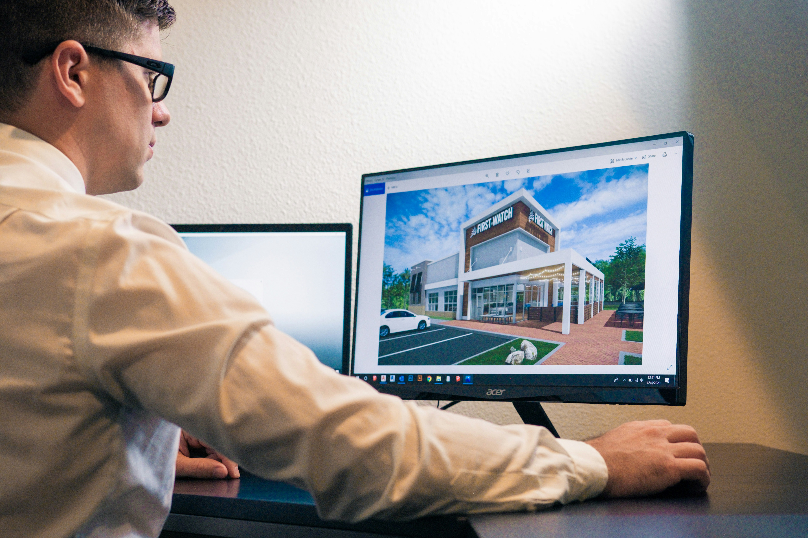
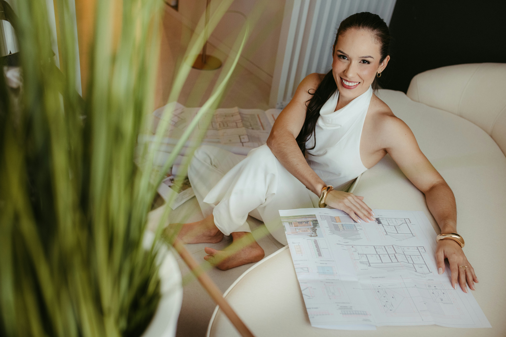
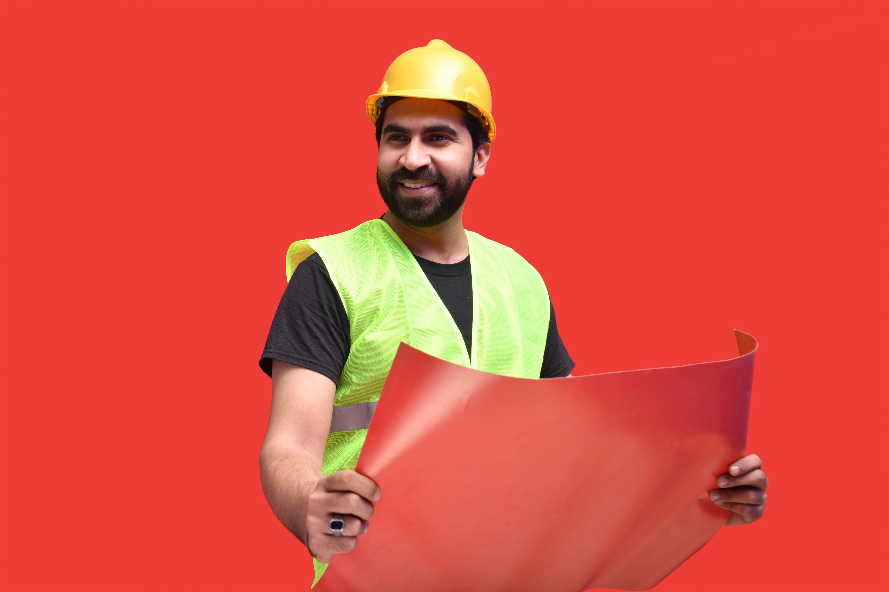
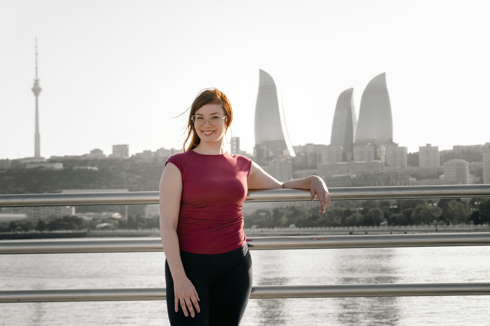
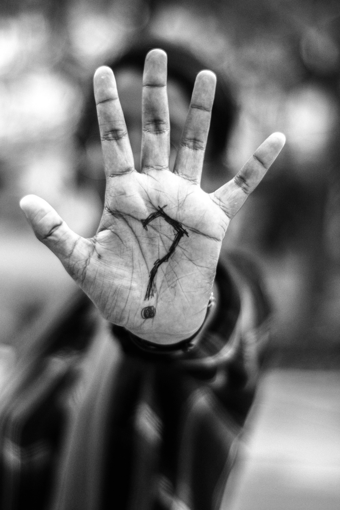

Laura Lenz

Laura gründete das Architekturbüro Raumwerk und begleitet jedes Projekt von der ersten Idee bis zur Fertigstellung.
Lieblingsbauwerk: Hotel Villa Gropius
Hinter jedem erfolgreichen Bauprojekt stehen Menschen mit Ideen, Erfahrung und einer großen Leidenschaft für Architektur.
Laura gründete das Architekturbüro Raumwerk und begleitet jedes Projekt von der ersten Idee bis zur Fertigstellung.
Lieblingsbauwerk: Hotel Villa Gropius

Jonas plant Wohnhäuser und Bürogebäude und legt besonderen Wert auf moderne und nachhaltige Architektur.
Lieblingsbauwerk: Schloss Neuschwanstein

Mia erstellt Bauzeichnungen und unterstützt die Planung mit viel Geduld und Genauigkeit.
Sie behauptet, gerade Linien seien ihre größte Stärke.

Tim sorgt dafür, dass auf unseren Baustellen alles nach Plan läuft.
Er hat wahrscheinlich schon mehr Schutzhelme getragen als Fahrradhelme.

Sophie organisiert Termine, beantwortet Anfragen und sorgt dafür, dass im Büro alles rund läuft.
Ohne sie würde vermutlich jeder zweite Termin vergessen werden.

Vielleicht bist genau du unser neues Teammitglied.
Interesse an Architektur und gute Laune sind immer willkommen.